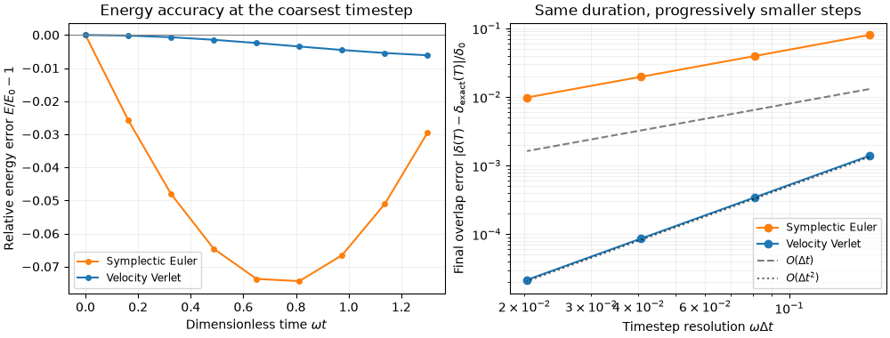

Note
Go to the end to download the full example code.
Integrators and Minimizers#
LinearIntegrator and
RotationIntegrator advance the simulation
state in time. A System holds one of each — one
for translational degrees of freedom (position, velocity) and one for
rotational degrees of freedom (orientation, angular velocity).
JaxDEM also supports energy minimization: instead of integrating the
equations of motion, you can drive the system towards a potential-energy
minimum. Minimizers are not integrator subclasses — they are Optax
gradient-transformation constructor functions (such as
fire()) passed to
create() via minimizer /
minimizer_kw, as described in the Minimizers section below.
Let’s see how to choose, configure, and swap them.
Linear vs Rotation Integrators#
Every integration step calls both integrators in sequence:
Force evaluation
Rotation finishes first so a linear thermostat can measure both terminal
velocities. This split lets you mix and match: you could pair
VelocityVerlet with
Spiral, or disable rotation
entirely while keeping translation active.
import jax.numpy as jnp
from dataclasses import replace
import matplotlib.pyplot as plt
import numpy as np
import jaxdem as jdem
state = jdem.State.create(pos=jnp.zeros((1, 3)))
system = jdem.System.create(
state.shape,
linear_integrator_type="verlet",
rotation_integrator_type="verletspiral",
)
print("Linear integrator:", type(system.linear_integrator).__name__)
print("Rotation integrator:", type(system.rotation_integrator).__name__)
Linear integrator: VelocityVerlet
Rotation integrator: VelocityVerletSpiral
Choosing an Integrator#
You select integrators by their registered name when calling
create(). Some integrators accept
additional keyword arguments through linear_integrator_kw or
rotation_integrator_kw. Consult the API reference for the specific
parameters of each integrator.
Start with VelocityVerlet
("verlet") for inertial, conservative translation and
VelocityVerletSpiral
("verletspiral") for rigid-body rotation. Use
Langevin ("langevin") when
stochastic drag and thermal forcing are part of the intended model, or
VelocityVerletRescaling
("verlet_rescaling") for explicit kinetic-temperature control.
DirectEuler ("euler") is a
simpler first-order method; it generally needs smaller steps for comparable
accuracy. Smooth frictionless spheres can disable rotation.
JaxDEM imposes no unit system: positions, masses, stiffnesses, and time must
be consistent. For a linear contact, the oscillation scale is
sqrt(m_effective / k_effective). Choose dt well below the shortest
relevant contact time, then repeat at dt/2 over the same physical duration.
Compare the quantity of interest and, for conservative dynamics, energy
drift. An integrator name or a visually plausible trajectory is not an
accuracy check; the factory’s default dt is not a stability guarantee.
To connect this choice to the equations of motion, for position-dependent forces and constant mass the translational velocity-Verlet update is
initialize() supplies \(\mathbf a_0\); starting with a
stale acceleration changes the first update. For a linear two-particle
contact the reduced mass and angular frequency are
The dimensionless resolution parameter is \(\omega\Delta t\). For an undamped isolated linear impact the contact duration is \(\pi/\omega\); a dense packing can have faster collective modes, so this pair scale is a useful starting estimate rather than a universal stability bound. Timestep refinement tests the accuracy of the observable being measured. Minimization, described below, instead seeks force and torque balance and does not represent this physical time evolution.
Measure the timestep error#
An initially compressed, stationary pair supplies a small accuracy test with an exact solution. Before separation, the overlap obeys
Stop at \(\omega T=1.3\), before the contact opens at \(\omega T=\pi/2\). Every refinement reaches this same physical time. Explicit unit masses make the reduced mass \(1/2\); the stiffness below is read from the material table actually used by the force law.
contact_state = jdem.State.create(
pos=jnp.array([[-0.45, 0.0], [0.45, 0.0]]),
rad=jnp.full(2, 0.5),
mass=jnp.ones(2),
)
contact_materials = jdem.MaterialTable.from_materials(
[jdem.Material.create("elastic", young=1.0, poisson=0.25, density=1.0)]
)
stiffness = float(contact_materials.young_eff[0, 0])
omega = np.sqrt(stiffness / 0.5)
initial_overlap = float(contact_state.rad.sum() - jnp.diff(contact_state.pos[:, 0])[0])
initial_energy = 0.5 * stiffness * initial_overlap**2
duration = 1.3 / omega
step_counts = np.array([8, 16, 32, 64])
def contact_observables(state, system):
separation = jnp.linalg.norm(state.pos[1] - state.pos[0])
overlap = jnp.maximum(0.0, state.rad.sum() - separation)
kinetic = 0.5 * jnp.sum(state.mass[:, None] * state.vel**2)
energy = kinetic + 0.5 * stiffness * overlap**2
return system.time, overlap, energy
fig, axes = plt.subplots(1, 2, figsize=(10, 3.8), layout="constrained")
for method, label, color in (
("euler", "Symplectic Euler", "tab:orange"),
("verlet", "Velocity Verlet", "tab:blue"),
):
contact_system = jdem.System.create(
state=contact_state,
dt=duration / step_counts[0],
collider_type="naive",
force_model_type="spring",
linear_integrator_type=method,
rotation_integrator_type=None,
mat_table=contact_materials,
)
overlap_errors = []
for count in step_counts:
trial_system = replace(contact_system, dt=jnp.asarray(duration / count))
trial_state, trial_system = jdem.System.initialize(contact_state, trial_system)
final_state, final_system = jdem.System.step_dynamic(
trial_state, trial_system, n=jnp.asarray(count)
)
_, final_overlap, _ = contact_observables(final_state, final_system)
overlap_errors.append(
abs(float(final_overlap) / initial_overlap - np.cos(omega * duration))
)
# Save only three scalar diagnostics per frame, rather than whole states.
trial_state, trial_system = jdem.System.initialize(contact_state, contact_system)
_, _, (times, _, energies) = jdem.System.trajectory_rollout(
trial_state,
trial_system,
n=int(step_counts[0]),
save_fn=contact_observables,
)
axes[0].plot(
np.r_[0.0, omega * np.asarray(times)],
np.r_[0.0, np.asarray(energies) / initial_energy - 1.0],
"o-",
color=color,
label=label,
markersize=4,
)
axes[1].loglog(
omega * duration / step_counts,
overlap_errors,
"o-",
color=color,
label=label,
)
# Refinement must improve this smooth-contact observable substantially.
assert overlap_errors[-1] < overlap_errors[0] / 6
print(f"{label}: final normalized-overlap errors = {np.array(overlap_errors)}")
resolution = omega * duration / step_counts
axes[1].loglog(resolution, 0.08 * resolution, "k--", alpha=0.5, label=r"$O(\Delta t)$")
axes[1].loglog(
resolution, 0.05 * resolution**2, "k:", alpha=0.6, label=r"$O(\Delta t^2)$"
)
axes[0].axhline(0.0, color="0.5", linewidth=0.8)
axes[0].set(
xlabel=r"Dimensionless time $\omega t$",
ylabel=r"Relative energy error $E/E_0-1$",
title="Energy accuracy at the coarsest timestep",
)
axes[1].set(
xlabel=r"Timestep resolution $\omega\Delta t$",
ylabel=r"Final overlap error $|\delta(T)-\delta_{\mathrm{exact}}(T)|/\delta_0$",
title="Same duration, progressively smaller steps",
)
for ax in axes:
ax.grid(alpha=0.2, which="both")
ax.legend(fontsize="small")
plt.show()

Symplectic Euler: final normalized-overlap errors = [0.07996261 0.03952561 0.01966296 0.00980824]
Velocity Verlet: final normalized-overlap errors = [1.38259963e-03 3.44826866e-04 8.61554669e-05 2.15356666e-05]
The left panel shows energy error during one part of a contact, not long-time energy drift. Symplectic Euler has a first-order phase/overlap error; Velocity Verlet has second-order error while the contact stays smooth. The slope guides on the right make those rates visible. Opening or closing contacts, friction, and multiple simultaneous contacts can change the observed convergence, so repeat this test for the quantity that matters in your own experiment.
Available Linear Integrators#
The LinearIntegrator registry contains the
concrete classes linked above:
# (the empty key ``""`` is a registered no-op; we filter it out)
print("Linear integrators:", sorted(k for k in jdem.LinearIntegrator._registry if k))
Linear integrators: ['euler', 'langevin', 'verlet', 'verletrescaling']
Available Rotation Integrators#
The RotationIntegrator registry contains
Spiral ("spiral") and
VelocityVerletSpiral
("verletspiral"):
print(
"Rotation integrators:", sorted(k for k in jdem.RotationIntegrator._registry if k)
)
Rotation integrators: ['spiral', 'verletspiral']
See the API documentation of each class for constructor parameters and algorithmic details.
Deactivating an Integrator#
Passing None as the integrator type (the empty string "" is
equivalent) selects the base LinearIntegrator
or RotationIntegrator, which leaves the
corresponding degrees of freedom untouched. This is useful when you want
to freeze translation or rotation.
# Freeze rotation — only translate:
system = jdem.System.create(
state.shape,
linear_integrator_type="verlet",
rotation_integrator_type=None,
)
print("Rotation integrator (deactivated):", type(system.rotation_integrator).__name__)
Rotation integrator (deactivated): RotationIntegrator
Freeze translation — only rotate:
system = jdem.System.create(
state.shape,
linear_integrator_type=None,
rotation_integrator_type="verletspiral",
)
print("Linear integrator (deactivated):", type(system.linear_integrator).__name__)
Linear integrator (deactivated): LinearIntegrator
Passing Constructor Arguments#
Some integrators take additional parameters. Pass them via
linear_integrator_kw or rotation_integrator_kw:
system = jdem.System.create(
state.shape,
linear_integrator_type="langevin",
rotation_integrator_type=None,
linear_integrator_kw={"gamma": 0.5, "temperature": 0.1, "k_B": 1.0},
)
print("Langevin gamma:", system.linear_integrator.gamma)
Langevin gamma: 0.5
Minimizers#
Minimizers in JaxDEM are standard Optax
optimizers that descend the potential
energy landscape. You configure them by passing the constructor function (such
as fire(),
damped_newtonian(), or standard Optax
optimizers like optax.adam) to
minimizer, along with any keyword arguments in minimizer_kw.
Inside create(), JaxDEM constructs the optimizer
and wraps it in CustomGradientTransformation,
which tracks the constructor
function and arguments for serialization.
Force-only optimizers (requires_value=False, including
fire() and
damped_newtonian()) also support contact
history and facet force conventions.
Minimization freezes stored pair history by default. Pass
advance_history=True to minimize() to update displacement-dependent
history after accepted steps. Both modes disable velocity-dependent forces.
Value-based optimizers use analytical physical gradients when available,
otherwise they differentiate energy with stored history fixed. For frictional
laws, that energy gradient can differ from the mechanical contact force.
AD through collider energy requires
NaiveSimulator or
NeighborList; direct
DynamicCellList and
DynamicMultiCellList traversals
do not support reverse-mode differentiation. A custom
target_fn uses ordinary AD through the
State mapping.
Every optimizer uses the same continuous body coordinates: positions and unwrapped angles in 2D, or raw quaternions normalized for the State in 3D. Rotations use a fixed reference throughout minimization, preserving the meaning of accumulated optimizer gradients and parameter history.
For checkpoint serialization, JaxDEM saves the import path of the constructor
function (e.g. "jaxdem.minimizers.fire" or "optax.adam") and the dictionary
of keyword parameters. Upon restoration, it resolves and calls the function to
recreate the optimizer.
We therefore recommend defining custom constructor functions and custom
target functions (target_fn) in an importable module (not in
__main__), so you can restore system snapshots later. This is a
recommendation, not a requirement: minimization itself works exactly the
same with functions defined in your main script or a notebook. Only
saving and reloading the system through a checkpoint needs a resolvable
import path.
Note
Minimizers and integrators are independent.
The minimizer and the linear/rotation integrators live in separate
fields of the system and never touch each other’s configuration or
internal state: minimize() does not
advance time or use the integrators, and
step() ignores the minimizer. You can
first minimize and then integrate, integrate and then minimize, or
alternate between them in any order without one affecting the other.
Note
Using Composite Optimizers
If you want to use a composite optimizer like optax.chain, you cannot pass it directly as an instantiated object because the checkpoint writer does not support arbitrary nested object serialization.
Instead, define a simple wrapper function that constructs the chain. As
above, the minimizer works no matter where you define this function. You
only need to place it in a separate importable module (not your main
script or __main__) so the checkpoint writer can save its import
path and restore the minimizer on load.
# In an importable module, e.g., my_optimizers.py
import optax
def my_chained_optimizer(learning_rate=1e-3, max_grad_norm=1.0):
return optax.chain(
optax.clip_by_global_norm(max_grad_norm),
optax.adam(learning_rate)
)
# Then pass it to the system creation:
system = jdem.System.create(
...,
minimizer=my_optimizers.my_chained_optimizer,
minimizer_kw={"learning_rate": 1e-4, "max_grad_norm": 0.5}
)
system = jdem.System.create(
state.shape,
minimizer=jdem.fire,
minimizer_kw={"dt": 1e-2},
)
print("Minimizer:", system.minimizer.type_name)
Minimizer: fire
The minimize() Routine#
JaxDEM provides a convenience method
minimize() that runs a
jax.lax.while_loop
until both free-body force and torque norms meet tolerance.
Custom targets use their position and world-angular gradient norms;
those residuals can differ from the State’s physical forces and torques.
Step limits, nonfinite values and search overflow are unsuccessful exits.
With the physical objective, FIRE and damped Newtonian evaluate energy once
after relaxation. Custom targets are evaluated during optimization.
Relaxation iterations are not elapsed physical time. A minimum can still
have positive overlap energy under compression; small energy alone does
not establish mechanical equilibrium or rigidity.
state = jdem.State.create(
pos=jnp.array([[0.0, 0.0], [1.5, 0.0]]),
rad=jnp.array([1.0, 1.0]),
)
system = jdem.System.create(
state.shape,
minimizer=jdem.fire,
minimizer_kw={"dt": 0.05},
mat_table=jdem.MaterialTable.from_materials(
[jdem.Material.create("elastic", young=1.0, poisson=0.25, density=1.0)]
),
)
# Unit masses and stiffness keep this small relaxation inexpensive.
result = system.minimize(state, system, max_steps=500, force_tol=1e-6)
state, system, steps, pe = result
print(f"Converged: {result.converged}, steps: {steps}, PE = {pe:.6e}")
print(
f"Force residual: {result.info.force_max}, torque residual: {result.info.torque_max}"
)
if not bool(result.converged):
raise RuntimeError(f"Relaxation failed with reason {result.reason}.")
# The initially overlapping pair can separate freely, so its minimum energy is zero.
np.testing.assert_allclose(pe, 0.0, atol=1e-8)
Converged: True, steps: 18, PE = 0.000000e+00
Force residual: 0.0, torque residual: 0.0
The Integration Loop#
For reference, the full per-step sequence executed by
step() is:
apply()— enforce boundary conditionsCollider + force manager — compute forces and torques
The step_before_force() / step_after_force() split lets multi-stage
schemes (such as Velocity Verlet) position their updates around the force
evaluation correctly.
Fixed Particles#
Particles with state.fixed set to True
keep their prescribed linear and
angular velocities; forces do not accelerate them. Zero velocity keeps
them stationary. See The Simulation State for this field.
Total running time of the script: (0 minutes 5.597 seconds)